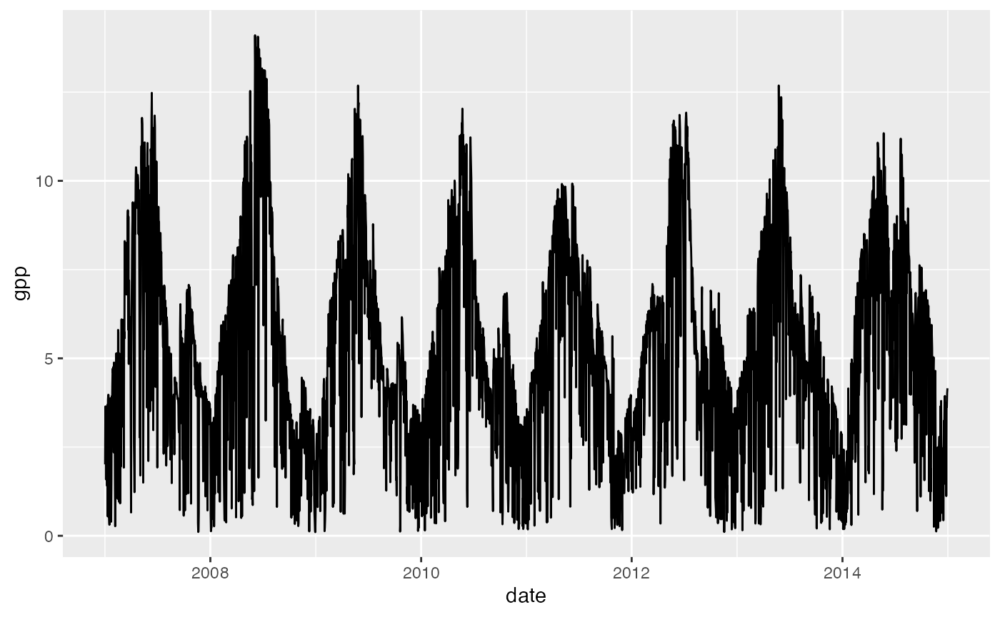

Forcing data of rsofun adheres to a fixed format as
described [here]. Any data in this format will be valid
rsofun input data. However to facilitate the formatting of
these datasets you may use the internal lab tool ingestr.
This toolset allows for the easy and consistent formatting of data.
However, this toolset is very dynamic in nature and therefore will
not see a formal CRAN release. Within this context we will also give
very limited support. Despite these caveats you might find this tool
useful. The below routine shows you how to format data using
ingestr, assuming all source data has
been downloaded beforehand.
Preparing driver data
To format data we need to load the required libraries first.
To limit the computational times we’ll use a subset of three fluxnet site locations. We can also use arbitrary locations if desired.
fluxnet_sites <- ingestr::siteinfo_fluxnet2015 %>%
dplyr::filter(sitename == "FR-Pue")Using a data frame of site info we can subset and format fluxnet data into the desired shape (assuming a local copy of the FLUXNET2015 dataset for the desired sites). We refer to the FLUXNET2015 data website for data downloads.
# grab fluxnet data ----
df_fluxnet <-
suppressWarnings(
suppressMessages(
ingestr::ingest(
siteinfo = fluxnet_sites,
source = "fluxnet",
getvars = list(
temp = "TA_F_DAY",
prec = "P_F",
vpd = "VPD_F_DAY",
ppfd = "SW_IN_F",
patm = "PA_F"),
dir = "~/data/FLUXNET-2015_Tier1/20191024/DD/",
settings = list(
dir_hh = "~/data/FLUXNET-2015_Tier1/20191024/HH/", getswc = FALSE),
timescale = "d"
)
)
)Not all required data is available within the fluxnet dataset. As such we amend these data with additional data sources. In this case we use CRU data to complement the fluxnet data, and merged into a single ‘meteo’ data frame.
df_cru <- ingestr::ingest(
siteinfo = fluxnet_sites,
source = "cru",
getvars = "ccov",
dir = "~/data/cru/ts_4.01/"
)
df_meteo <- df_fluxnet %>%
tidyr::unnest(data) %>%
left_join(
df_cru %>%
tidyr::unnest(data),
by = c("sitename", "date")
) %>%
group_by(sitename) %>%
tidyr::nest()Additional fAPAR data is gathered from remote sensing products. We first specify download settings, and initiate a download for our site locations.
settings_modis <- get_settings_modis(
bundle = "modis_fpar",
data_path = "~/data/modis_subsets/",
method_interpol = "loess",
network = c("fluxnet","icos"),
keep = TRUE,
overwrite_raw = FALSE,
overwrite_interpol= TRUE,
n_focal = 0
)
df_modis_fpar <- ingest(
fluxnet_sites,
source = "modis",
settings = settings_modis,
parallel = FALSE,
ncores = 1
)
## renaming the variable
df_modis_fpar <- df_modis_fpar %>%
mutate(
data = purrr::map(data, ~rename(., fapar = modisvar_filled))
)We also download matching CO2 data for the dates covering the fluxnet sites. This covers all data downloads!
# . grab CO2 data ----
df_co2 <- ingestr::ingest(
fluxnet_sites,
source = "co2_mlo",
verbose = FALSE
)A final set of required ancillary data covers the soil texture properties.
# . set soil parameters ----
df_soiltexture <- bind_rows(
top = tibble(
layer = "top",
fsand = 0.4,
fclay = 0.3,
forg = 0.1,
fgravel = 0.1
),
bottom = tibble(
layer = "bottom",
fsand = 0.4,
fclay = 0.3,
forg = 0.1,
fgravel = 0.1)
)Simulation parameters
With all data downloads done we have to set some simulation parameters which will be merged with all driver data. This data includes the number of spin-up years, and how soil and temperature stress are dealt with.
params_siml <- list(
spinup = TRUE,
spinupyears = 10,
recycle = 1,
soilmstress = TRUE,
tempstress = TRUE,
calc_aet_fapar_vpd = FALSE,
in_ppfd = TRUE,
in_netrad = FALSE,
outdt = 1,
ltre = FALSE,
ltne = FALSE,
ltrd = FALSE,
ltnd = FALSE,
lgr3 = TRUE,
lgn3 = FALSE,
lgr4 = FALSE
)Merging data streams
With all pieces in place we can use the rsofun
collect_drivers_sofun() function to merge all datasets into one nested
dataframe, which serves as input to the rsofun p-model.
This concludes the formatting of the driver data
p_model_fluxnet_drivers <- rsofun::collect_drivers_sofun(
site_info = fluxnet_sites,
params_siml = params_siml,
meteo = df_meteo,
fapar = df_modis_fpar,
co2 = df_co2,
params_soil = df_soiltexture
)Running a simulation
With the above formatted data we can now run the model, provided some additional model parameters. For a model calibration routine see this vignette.
# run the model for these parameters
# optimized parameters from previous work (Stocker et al., 2020 GMD)
params_modl <- list(
kphio = 0.09423773,
soilm_par_a = 0.33349283,
soilm_par_b = 1.45602286,
tau_acclim_tempstress = 10,
par_shape_tempstress = 0.0
)
output <- rsofun::runread_pmodel_f(
p_model_fluxnet_drivers,
par = params_modl
)
output$data[[1]] %>%
ggplot(aes(date, gpp)) +
geom_line()